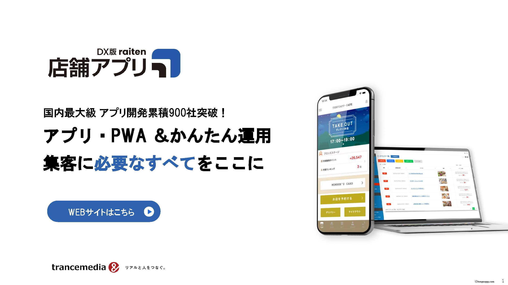

店舗アプリのサービス資料
国内最大級 アプリ開発累積900社突破！
店舗アプリのサービスを網羅した資料をダウンロードいただけます。

お送りいただく個人情報は下記利用目的のために利用いたします。利用目的以外の情報の取扱いに関してはリンク先ページをご覧ください。
[利用目的]
- 当社サービスに関するパンフレット等の資料送付などお問い合わせに対する対応、その他当社サービスに関し連絡を差し上げるため
- 当社サービスの提案、情報提供、キャンペーンのご案内その他広告配信のため
- 当社サービスに関するアンケート調査、モニター調査等の実施その他マーケティング活動のため
- 受発注、各種契約手続きのため